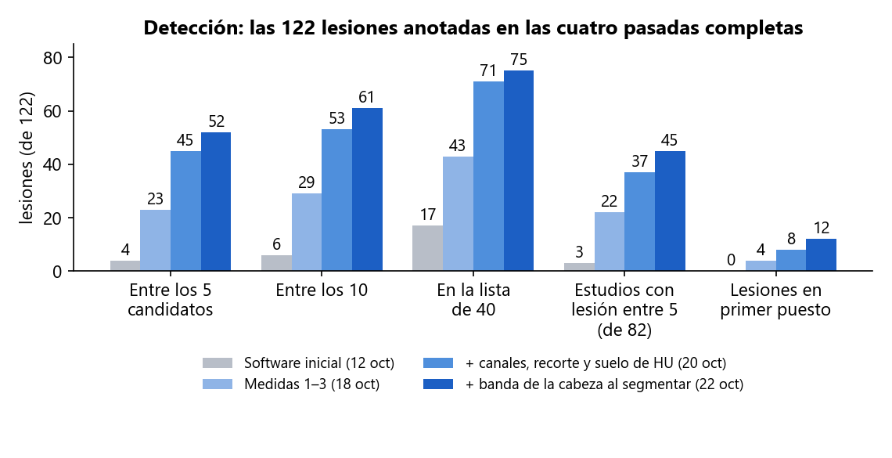
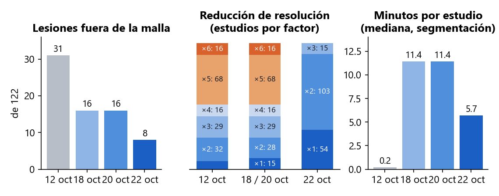
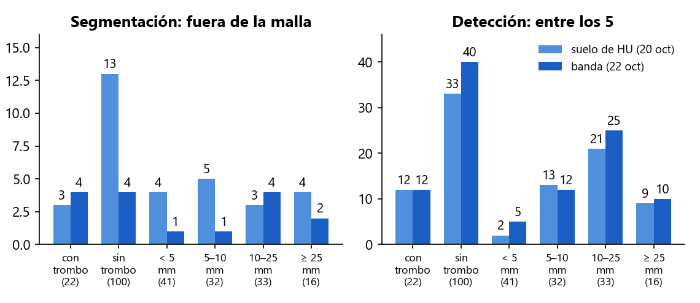
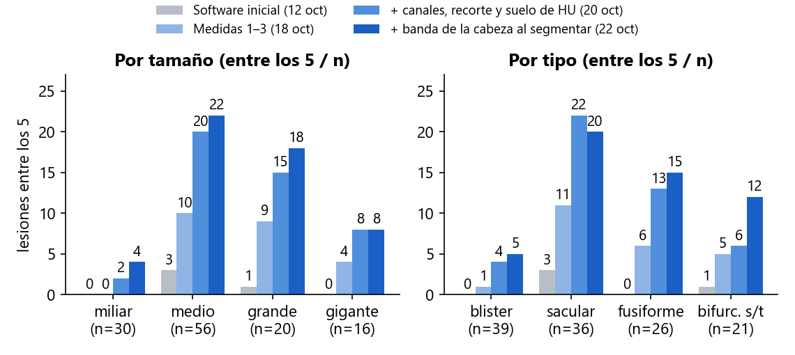
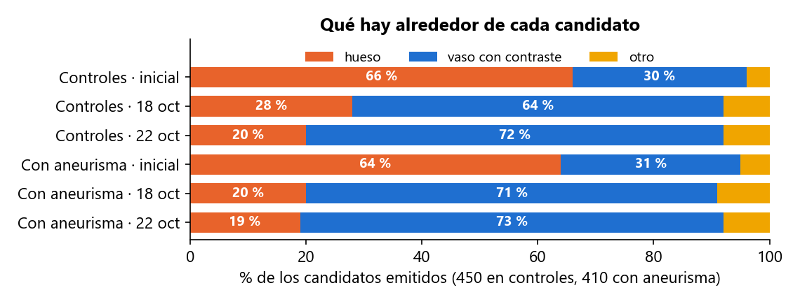
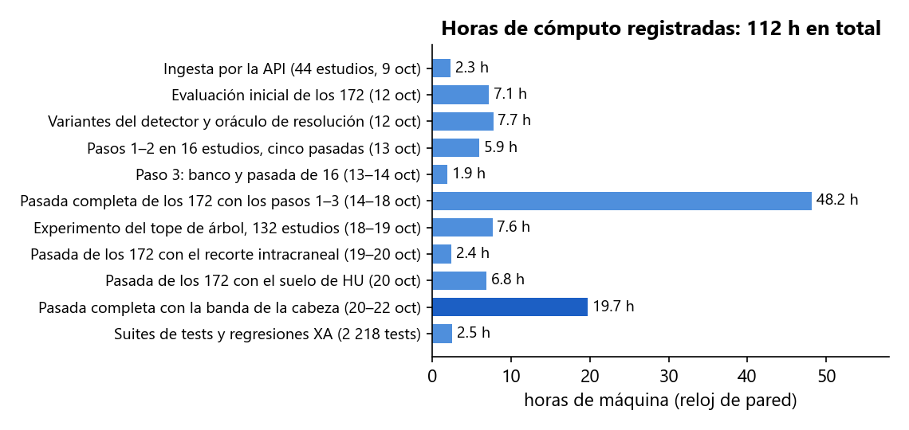

En dos semanas se ha incorporado el primer dataset público con verdad de terreno (172 angio-TC de cabeza con 122 aneurismas segmentados a mano), se ha medido el detector de Prospective sobre él cuatro veces de principio a fin y, entre pasada y pasada, se han identificado y corregido las causas del fallo una a una, separando siempre lo que falla en la segmentación (la lesión no llega a la malla) de lo que falla en la detección (está en la malla y el detector no la coloca). Las lesiones que la aplicación pone entre sus 5 candidatos pasan de 4 a 52; las que no llegan a la malla, de 31 a 8; el tiempo de segmentación por estudio se ha reducido a la mitad respecto al 18 de octubre. Todo está medido sobre los 172 estudios, comprobado contra los casos de referencia de 3DRA y publicado en el repositorio.
| Fecha | Trabajo | Resultado | Estado |
|---|---|---|---|
| 8 oct | Auditoría de seguridad de la API y el acceso; búsqueda de datasets DICOM con verdad de terreno | 7 hallazgos corregidos el mismo día. Elegido Zenodo 15697196 (CC-BY): el único con DICOM + segmentación manual del aneurisma | hecho |
| 9 oct | Ingesta de 44 estudios por la API, como un usuario, y banco de medida del detector | Primer dato real: 2 aciertos de 34 aneurismas en angio-TC | hecho |
| 12 oct | Evaluación de los 172 estudios con el software tal cual, ajustes del detector y un oráculo de resolución | 4 de 122 lesiones entre los 5; 31 fuera de la malla; tres causas medidas | hecho |
| 13 – 14 oct | Medidas 0 – 3: red de seguridad 3DRA, resolución nativa donde importa, hueso fuera de la máscara en TC, detector sobre la malla limpia | Diseñadas y medidas sobre 16 estudios; 3DRA sin cambios | hecho |
| 14 – 18 oct | Primera pasada completa de los 172 con las medidas 1 – 3 (48 h de máquina) | 23 de 122 entre los 5; 16 fuera de la malla; dos poblaciones de estudios identificadas | hecho |
| 18 – 19 oct | Canales de grosor en los 132 estudios de cabeza y cuello (7,6 h); criterio absoluto en controles | Entre los 5 de 5 a 13 en esos estudios; regla cambiada. El criterio absoluto se midió y no existe | hecho |
| 19 – 20 oct | Recorte a la región intracraneal antes de detectar; suelo de densidad; dos pasadas de detección de los 172 sobre las mallas guardadas | 44 y después 45 de 122 entre los 5, 8 en primer puesto, ninguna lesión baja | hecho |
| 20 oct | Banda de la cabeza antes de segmentar (medida sobre los registros, codificada, con tests); fusión con los 321 cambios del compañero y publicación en master | Previsto: la mitad de los vóxeles, 13 de las 16 lesiones fuera de la malla en estudios que ganan resolución | hecho |
| 20 – 22 oct | Cuarta pasada completa de los 172, con segmentación desde el DICOM (19,7 h de máquina) | 52 de 122 entre los 5, 12 en primer puesto, 45 de 82 estudios, 8 fuera de la malla, 5,7 min por estudio | hecho |
| 22 oct | Diagnóstico lesión a lesión de la pasada: trombo, diezmado de la malla, estudio 093 fase a fase; experimento del tope de curvatura sobre las mallas guardadas | Tres causas separadas (sección 5); el experimento está corriendo, resultado el 23 oct | en marcha |
| pendiente | Comprobación de la pantalla con un estudio del dataset | Requiere entrar en la aplicación; la lógica es la misma función en la API y en el banco, cubierta por tests | pendiente |
Zenodo 15697196: 172 angio-TC de cabeza (145 de ellas incluyen el cuello), 82 con aneurisma y 90 controles, con cada aneurisma segmentado a mano en un fichero STL. Son 122 lesiones: la mitad miden 5 mm o menos, 39 son «blister» de 1,3 – 3,6 mm, 16 son gigantes, 20 están calcificadas y 22 trombosadas. Es un conjunto difícil a propósito, y es el tipo de examen (TC de cabeza entera, con el hueso tocando los vasos con contraste) para el que Prospective no se había medido nunca: su detector se había calibrado sobre dos casos de angiografía rotacional 3D (3DRA), donde no hay hueso.
Dos medidas distintas, siempre separadas. Segmentación: la lesión «llega a la malla» si más de la mitad de la superficie que el radiólogo dibujó está a menos de 1 mm de la malla que Prospective construye; si no llega, el detector no puede verla. Detección: la lesión cuenta como detectada si uno de los candidatos que la aplicación enseña está a menos de 5 mm o de su diámetro. «Entre los 5» es la lista que ve el clínico; «entre los 40» es la lista larga del banco, que dice si la lesión existe para el detector aunque quede atrás.
| # | Medida | Qué hace | Segmentación (antes → después) | Detección (antes → después) |
|---|---|---|---|---|
| 0 | Red de seguridad 3DRA (13 oct) | Regresión automática sobre los dos casos de referencia de 3DRA, ejecutada tras cada cambio. | Sin cambios en 3DRA tras cada medida. | Lesión en el primer puesto en ambos, tras cada medida. |
| 1 | Resolución nativa donde importa (13 oct) | La pasada reducida localiza el árbol; se vuelve a segmentar a la resolución del DICOM en una banda de 5 mm alrededor, por baldosas. | Fuera de la malla: 31 → 16. Coste: 10 s → 11 min por estudio. | Con 2 y 3: entre los 5, 4 → 23; en la lista de 40, 17 → 43. |
| 2 | Hueso fuera de la máscara en TC (13 oct) | Lo que supera 700 HU se quita antes de rellenar, con 1,5 mm de margen. En 3DRA no se aplica. | Pieza mayor de la malla: 760 → 196 cm³. Coste conocido: una pared calcificada pegada al cráneo se va con él. | Candidatos sobre hueso: 560 → 206 de 860; en controles, 66 % → 28 %. |
| 3 | El detector sobre la malla limpia (14 oct) | Regla absoluta de curvatura en lugar del percentil y «la región convexa más grande primero». | — | Más lesiones entre los 5 y los 10 sin aumentar el hueso; seis variantes descartadas tras medirlas. |
| 4 | Canales de grosor también en cabeza y cuello (19 oct) | Los dos canales que miden el calibre del vaso solo corrían en mallas «árbol» pequeñas; ahora, siempre que la pieza mayor mida más de 20 mm. | — | Entre los 5: 23 → 31; en la lista, 43 → 52. Hueso en controles: 112 → 79 de 415. |
| 5 | Recorte a la región intracraneal (20 oct) | Las 122 lesiones están a menos de 121 mm del techo de la malla; los candidatos de los controles, a 284 mm. La malla se queda con sus 140 mm altos antes de detectar. | — (la malla no cambia; el detector mira solo la cabeza) | Entre los 5: 31 → 44; ganan 17, pierden 4. Detección 3 veces más rápida. |
| 6 | Suelo de densidad (20 oct) | Un candidato en aire o en partes blandas sin contraste (por debajo de −100 HU de media o de 200 de máximo) no es un aneurisma; se quita antes de elegir los 5. | — | Entre los 5: 44 → 45; primer puesto 6 → 8; ninguna lesión baja. 1 148 candidatos quitados de 7 647. |
| 7 | Banda de la cabeza antes de segmentar (20 – 22 oct) | 145 estudios son de cabeza y cuello (350 mm de alto) y se segmentaban reducidos por 2 a 6 por falta de memoria. Las 122 lesiones están a 54 – 120 mm bajo el cráneo: se segmentan solo los 150 mm bajo el techo del cráneo. | Fuera de la malla: 16 → 8 (recupera 11, pierde 3). Reducción: 68 estudios a ×5 y 16 a ×6 → ninguno por encima de ×3; 54 a nativo. 11,4 → 5,7 min por estudio. | Entre los 5: 45 → 52; entre los 10, 53 → 61; primer puesto 8 → 12; estudios 37 → 45 de 82. Suben 30 lesiones, bajan 22. |
Herramientas que quedan: evaluación de los 172 fuera del servidor por el mismo camino que la API (reanudable, con lista larga y traza por región), banco del detector, análisis por lesión a partir de los registros, diagnóstico de la máscara fase a fase, y la suite del backend: 2 218 tests. Código publicado en master el 20 de octubre; el informe técnico de hoy, commiteado en local.

Detección. Las mismas 122 lesiones, el mismo criterio y la misma herramienta de medida en las cuatro pasadas; solo cambia el software. Las pasadas del 20 de octubre reutilizan las mallas del 18 (solo detección); la del 22 vuelve a segmentar desde el DICOM con la banda de la cabeza.

Segmentación. Izquierda: lesiones que no llegan a la malla. Centro: cuántos estudios se segmentan reducidos y por cuánto (×5 y ×6 eran 84 estudios; ahora el peor es ×3 y 54 van a resolución nativa). Derecha: minutos de segmentación por estudio (mediana). La resolución nativa del 13 de octubre costó 11 min; la banda devuelve la mitad sin perder resolución, porque segmenta la mitad de los vóxeles.

La última medida, por grupos. En segmentación gana casi todo (los sacos sin trombo fuera de la malla pasan de 13 a 4); en detección ganan los sacos medianos sin trombo (33 → 40 entre los 5). Las 22 lesiones trombosadas no cambian (12 → 12): la angio-TC solo enseña la luz del vaso, y el trombo se lleva la pared que el radiólogo dibujó. Es un límite de la imagen, no del detector.

Los sacos medianos, grandes y gigantes han aparecido: 22 de 56, 18 de 20 y 8 de 16. Los miliares (4 de 30) y los blister (5 de 39) siguen casi sin verse: no es un umbral, es que los canales actuales no tienen con qué verlos. Los saculares bajan de 22 a 20 con la banda: son dos de las nueve lesiones que pierden puesto por el diezmado de la malla (sección 5).

Los candidatos han dejado de apuntar al cráneo (20 % en controles, de 66 %), pero no a cero: la aplicación sigue devolviendo 5 candidatos en todos los estudios, incluidos los 90 sanos. El criterio para decir «ninguno» se buscó el 19 de octubre y no existe con las señales actuales.
Tres causas distintas, ya separadas y medidas. La pasada con la banda deja 8 lesiones fuera de la malla y 9 que bajan de puesto. No son el mismo problema y no se arreglan con la misma medida.
Todo se ha ejecutado en un portátil (Intel i7-8550U de 4 núcleos, 16 GB de RAM), un solo proceso a la vez porque dos procesos de VTK simultáneos agotan la memoria. La primera pasada completa tardó 48 h de reloj; las dos del 20 de octubre reutilizan sus mallas y solo detectan (2,4 y 6,8 h); la del 22 vuelve a segmentar desde el DICOM y tarda 19,7 h, menos de la mitad que la primera. Las 112 h del gráfico son horas de máquina registradas en los ficheros de resultados, no horas de persona. La pasada larga se interrumpió tres veces por la suspensión del portátil y se reanudó donde iba.
Coste por estudio con todas las medidas: unos 6 min y medio de mediana (5,7 de segmentación y 49 s de detección; el 20 de octubre eran 12). Con un servidor de 8 núcleos y 64 GB bajaría a la mitad o menos: las baldosas de la banda nativa se pueden paralelizar y los 15 estudios que aún se reducen a un tercio dejarían de hacerlo.

| # | Qué | Por qué y qué decide | Esfuerzo |
|---|---|---|---|
| 1 | Tope de la copia de curvatura en marcha | Si con 160 000 o 240 000 vértices las 9 lesiones que bajaron recuperan el puesto sin perder las que subieron, se cambia el tope en el código con tests. Corre sobre las mallas guardadas: no hay que volver a segmentar. | 3 h de máquina por tope; resultado el 23 oct |
| 2 | Recuperación de sacos pegados al tubo | Regla en la máscara para los componentes del núcleo unidos al árbol por el cuello aunque superen los 3 mm, con el veto de lámina delante para no recuperar hueso. Decide 093, 024 y, probablemente, 026 y 121. Se mide primero en esos cuatro estudios y después en los 172. | Días + 20 h de máquina |
| 3 | Puertas de región del detector con el banco | Los motivos de fallo que quedan (compacidad 12, curvatura media 8, puntos 7, tope 7, fusión 7) se miden uno a uno con la traza por región sobre las mallas guardadas; cada ajuste se acepta solo si no baja ninguna lesión ni sube el hueso. | Días, sin segmentar |
| 4 | Comprobación en la aplicación | Entrar, reanudar un estudio del dataset y verificar que la pantalla cuenta lo mismo que el banco (puestos, confianza, tejido). La función de detección es la misma en la API y en el banco y está cubierta por tests; falta verlo en pantalla. | Media jornada |
| 5 | Honestidad de la pantalla | Mostrar el tejido alrededor de cada candidato y el vóxel efectivo de la malla; decir que la lista siempre tiene 5, que no hay veredicto de ausencia y que una lesión trombosada se ve por su luz. | Días |
| 6 | Rendimiento | Paralelizar las baldosas de la banda nativa y revisar el tope de memoria en un servidor con más RAM: de 6,5 min por estudio a 3 o menos. | 1 semana |
| 7 | Blister y miliares | Un canal nuevo (calibre a lo largo de la línea central, o detección sobre el volumen). Es investigación; mientras tanto, documentar que no se detectan. | Alto |